융캉제 -> 화산1914 -> 닝시야 야시장 -> 타이페이101 주변
-
공항에서 해야할것
- USIM 사기
- 환전 하기
- 이지카드 충전
공항에서 도심으로 이동하기
- 공항철도 이용
- 타이페이 메인스테이션 -> 시먼(blue)역 -
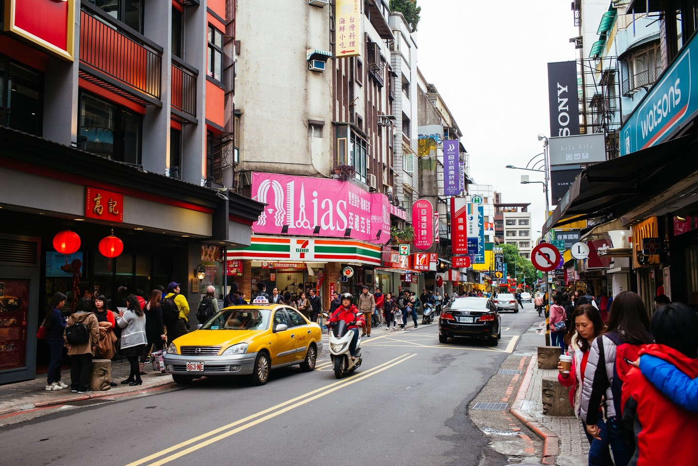
융캉제
- 수 많은 맛집과 아기자기한 카페 밀집 장소
- 전통 찻집
융캉제 가는법
- 시먼역(green) -> 중정기념당역(red) -> 동먼역
맛집정보
- 딘타이펑 본점 : 동먼역 바로 앞에 위치
- 스무디하우스 : 망고 스무디 빙수 -
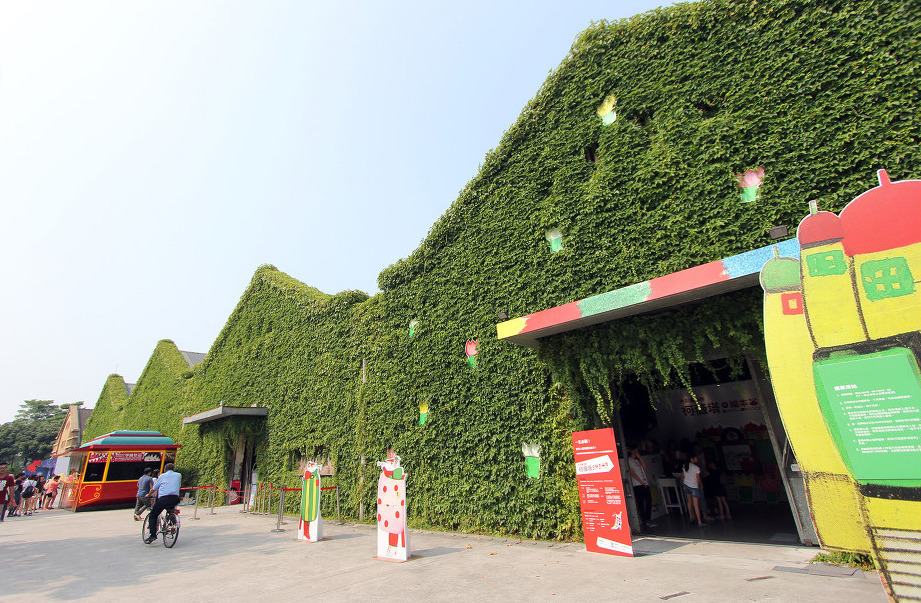
화산1914 창의 문화 지구
- 현지인들의 데이트 장소로 유명
- 이국적인 느낌의 건물이 많다
- Wooderful life : 오르골 DIY 체험 가능
화산1914 창의 문화 지구 가는법
- 동먼역(red) -> 메인스테이션(blue) -> 중샤오신성역 -
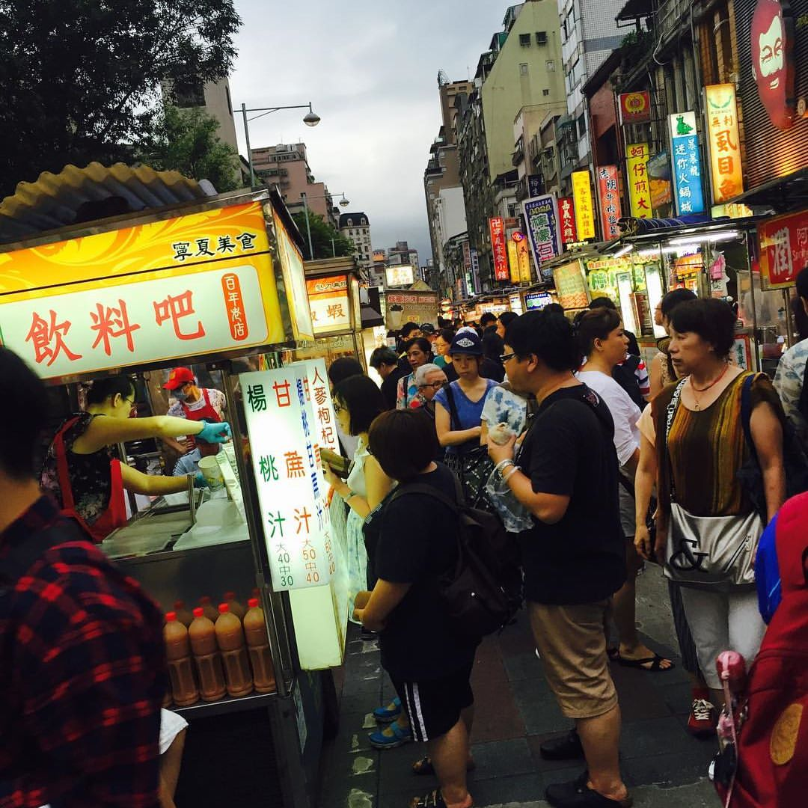
닝시야 야시장
- 시먼역에서 가장 가까운 야시장
- 외국인들 보다는 현지인들이 자주 찾는 곳
- 수많은 놀거리와 먹거리
- 대만스러움을 느낄 수 있는곳
닝시야 야시장 가는법
- 중샤오신성역(blue) -> 메인스테이션(red) -> 중산역 -
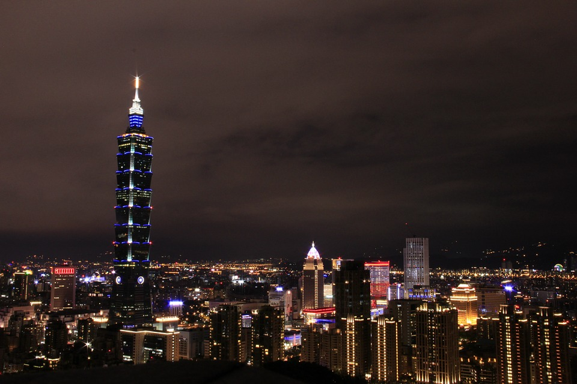
타이페이 101
- 타이페이 최대 랜드마크
- 전세계 3개 밖에 없는 LOVE 조형물
- 많은 백화점과 레스토랑이 많다
- 타이페이 101 타워를 찍고싶으면 상산으로 올라가기
타이페이101 가는법
- 중산역(red) -> 타이페이101역 -
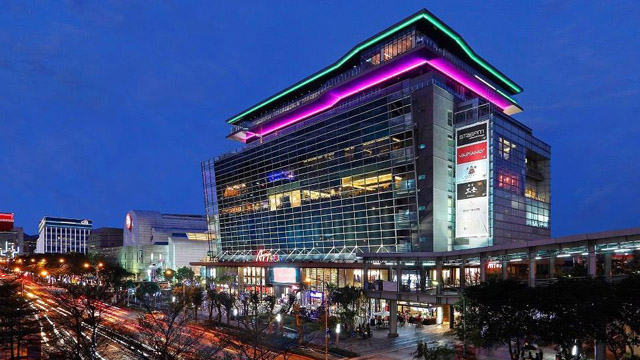
신의 지구
- 타이페이 최대 번화가
- 한국의 홍대와 같은곳
- 타이페이 101에서 도보로 이동 가능
산다오스역 -> 푸롱 -> 스린야시장
-
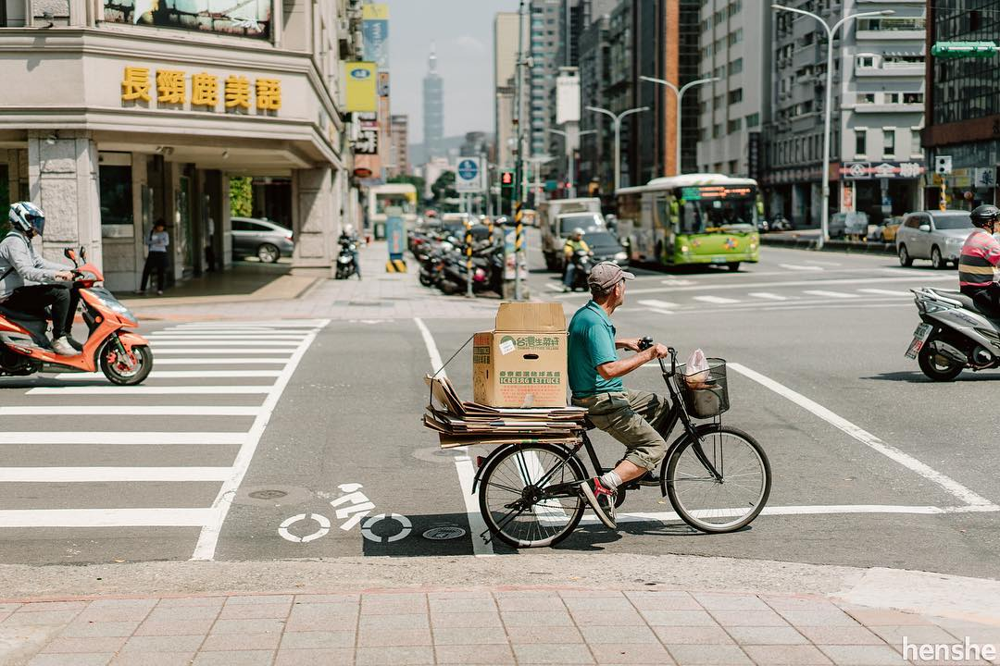
산다오스역
- 역 바로 옆 푸드코트
맛집 정보
- 푸항또우장 : 대만식 아침식사 -
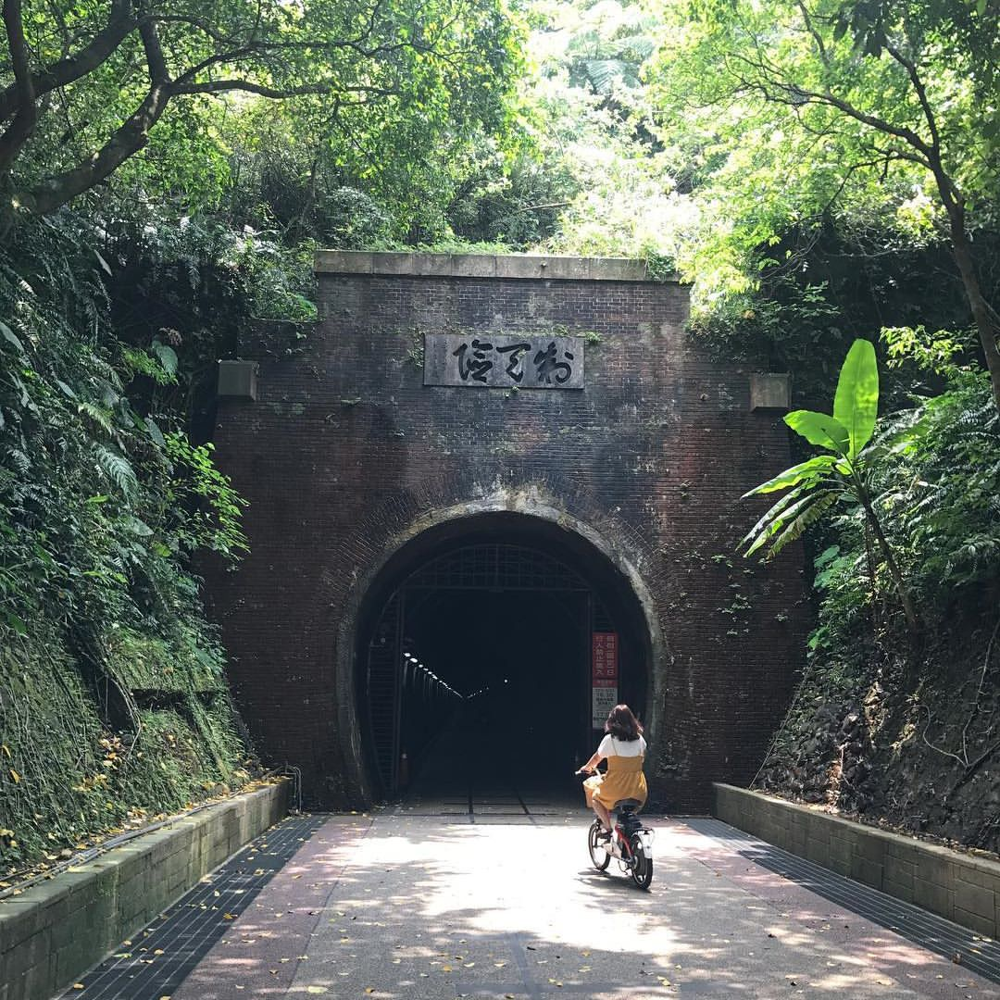
푸롱
- 타이페이 근교 도시
- 자전거투어 : 해변가를 자전거타고 투어 가능
- 자전거투어 중 볼 수 있는 자전거터널
- 푸롱역 근처 도시락 사서 자전거 투어 중 식사
푸롱 가는법
- 메인스테이션에서 푸롱역으로 가는 기차 구매 -
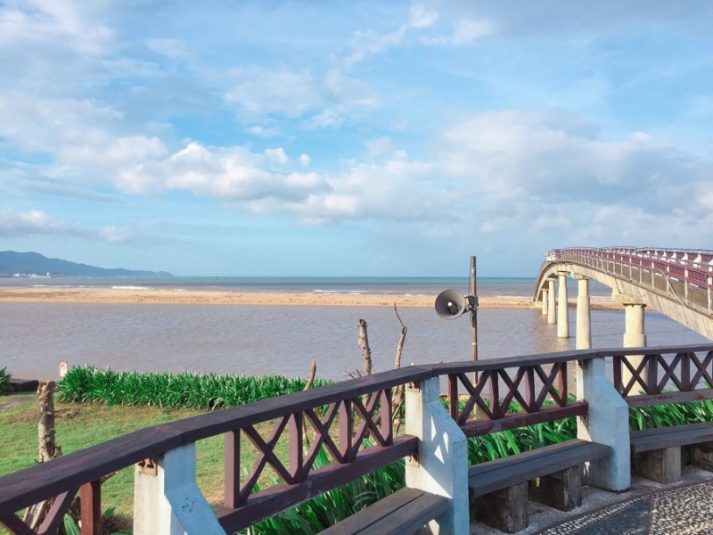
푸롱비치
- 푸롱의 대표적인 해변가
- 일몰이 아름다운 곳으로 유명
- 사유지이기 때문에 입장료 필요
-
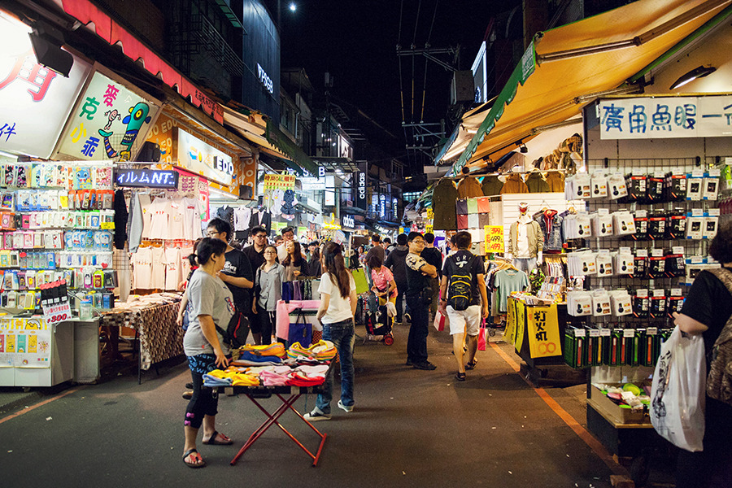
스린야시장
- 타이페이 최대 규모의 야시장
- 수 많은 먹거리와 놀거리
- 대형 브랜드 매장도 많은 곳
스린야시장 가는법
- 메인스테이션(red) -> 지앤티앤역
대표적인 길거리 음식
- 왕자치즈감자
- 큐브스테이크
- 지파이
이란현 -> 시먼딩
-
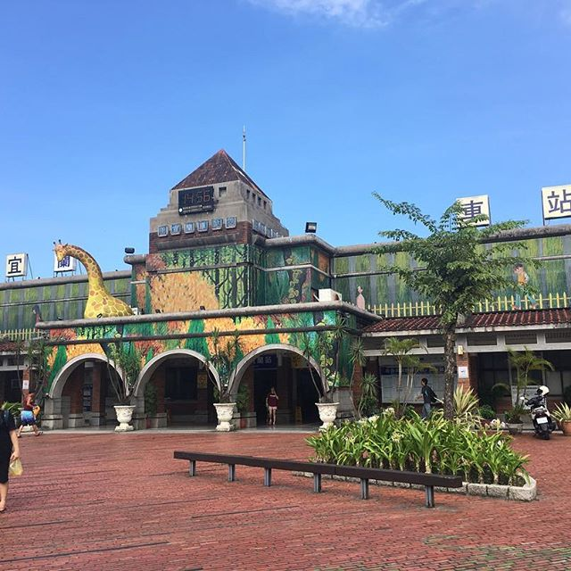
지미 공원
- 이란역 바로 옆에 위치
- 대만의 동화작가 지미 리아오의 작품
- 작품 속 주인공들과 사진 찍기 좋은곳
이란역 가는법
- 메인스테이션에서 기차타고 이동
- 이란현의 모든곳은 기차를 타고 이동한다
맛집 정보
- 웡 야오지 : 배틀트립에 나온 항아리 닭
-
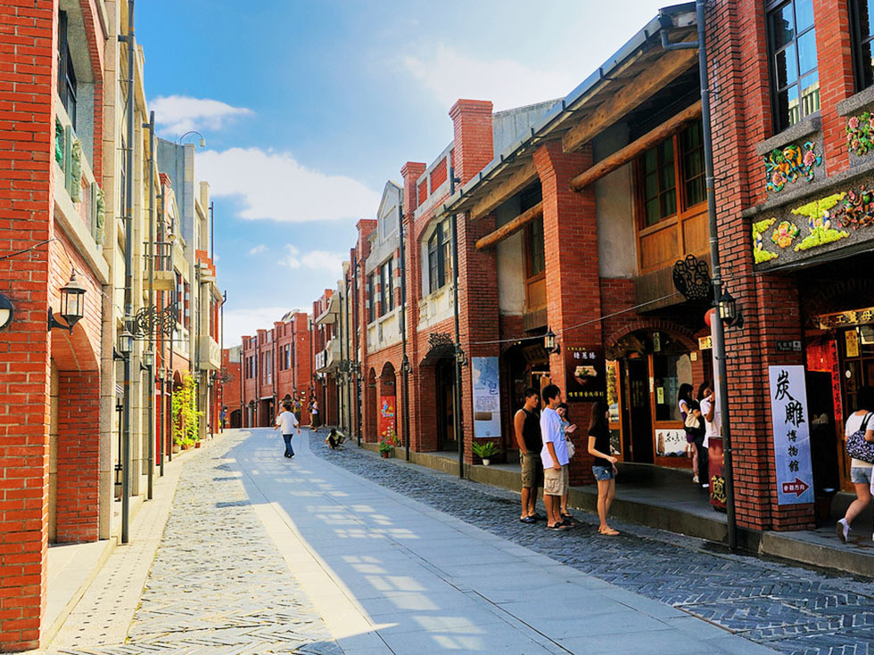
국립 예술 전통 중심
- 중화권 문화스러운 건물들이 많은 곳
- 중화권 관련 문화를 배울수 있는 곳
- 예술 관련된 박물관, 거리, 가게 등 다양한 볼거리
국립 예술 전통 중심 가는법
이란역 -> 루오동역 -> 셔틀 또는 버스 이용 -
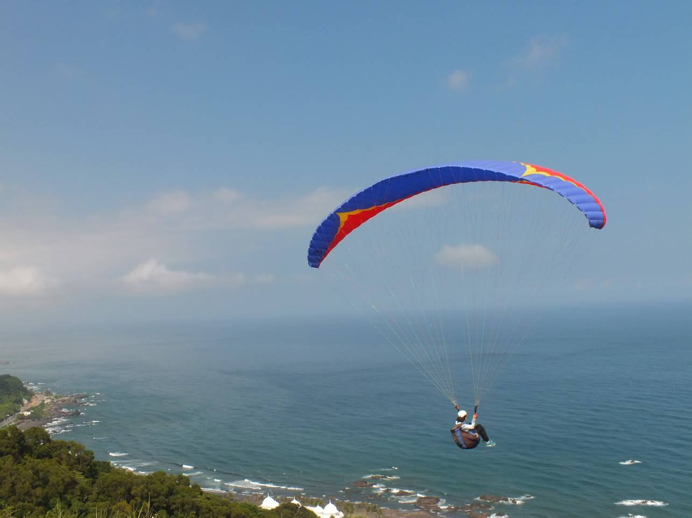
와이아오 해변
- 이란현 최대의 해변가
- 서핑하기 좋은곳으로 주변에서 대여가능
- 해변가 옆 란양박물관
- 패러글라이딩
와이아오해변 가는법
국립 예술 전통 중심(셔틀) -> 루오동역 -> 와이아오역 -
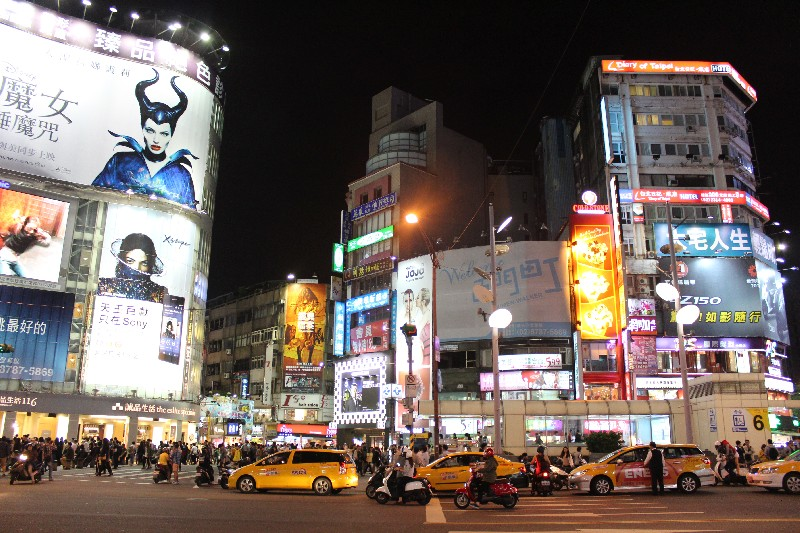
시먼딩
- 한국의 명동과 비슷
- 외국인이 제일 많은곳이며 맛집 과 볼거리가 많다
- 까르푸, 왓슨스 등 대형 매장이 많은 곳
맛집정보
- 마라훠궈 : 매운 샤브샤브와 비슷
- 우공관 : 우육면
- 아종면선 : 곱창 국수
예류 -> 진과스 -> 중샤오둔화
-
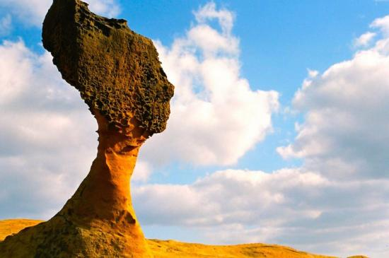
예류
- 예류 지질 공원
- 풍화 작용으로 인해 다양한 모습의 돌이 많은 곳
- 여왕머리바위가 가장 인기 많다
예류 가는법
- 메인스테이션 근처 버스 터미널 -> 1815번 버스타기 -> 도보이동
-
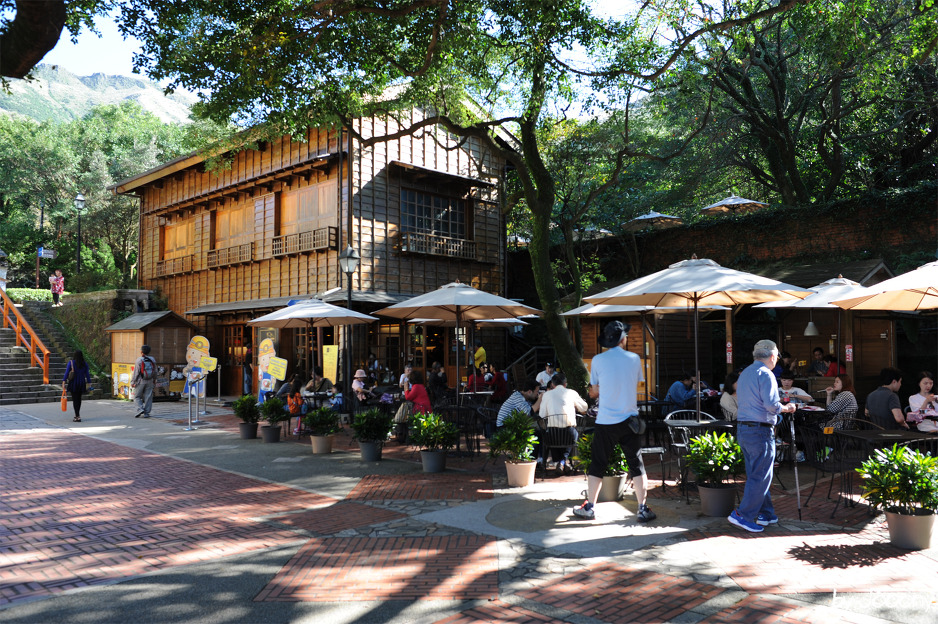
진과스
- 과거 황금을 캐던 광산에서 관광지로 변경
- 황금박물관 : 200kg 대의 황금 만지기
- 황금 폭포
진과스 가는법
- 예류 790 or 862 버스 -> 지룽 788버스 -> 진과스 하차
맛집정보
- 광부도시락 : 진과스에서만 먹을 수 있는 도시락 -
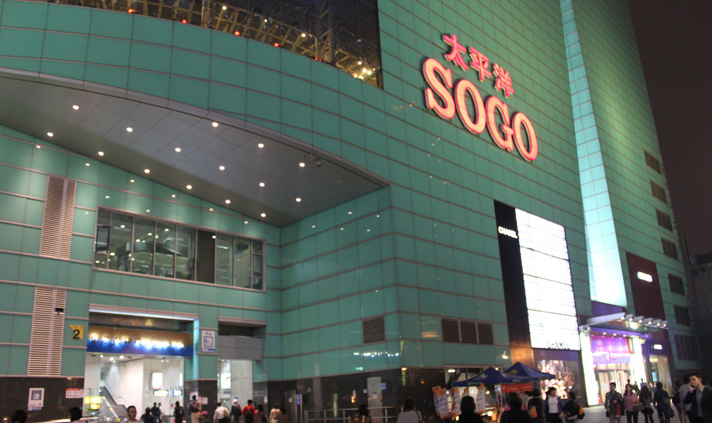
종샤오푸싱
- 대형 백화점 밀집 장소
- Sogo 백화점
종샤오푸싱 가는법
- 진과스 1062번 버스 -> 종샤오푸싱 하차
-
 종샤오둔화
종샤오둔화
- 동취 거리
- 분위기 좋은 레스토랑 및 카페, 패션 가게가 많은 곳
- 외국인보다는 현지인이 자주 찾는 곳
맛집정보
- 꼬치맛집
- 아이스몬스터 : 꽃할배에 나온 망고빙수
행천궁 -> 용산사 -> 시먼딩 -> 공항
-
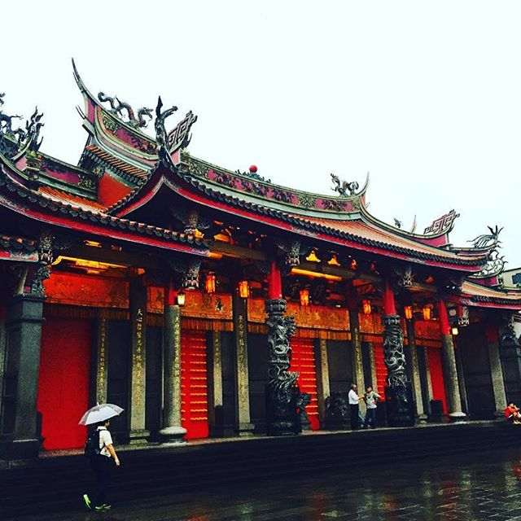
행천궁
- 관우를 모시는 사당
- 마사지 센터
행천궁 가는법
- 시먼역(green) -> 송강난징(yellow) -> 행천궁 하차 후 도보이동
맛집정보
- 상인수산 : 수산 시장을 백화점처럼 꾸며놓은것이 특징
-
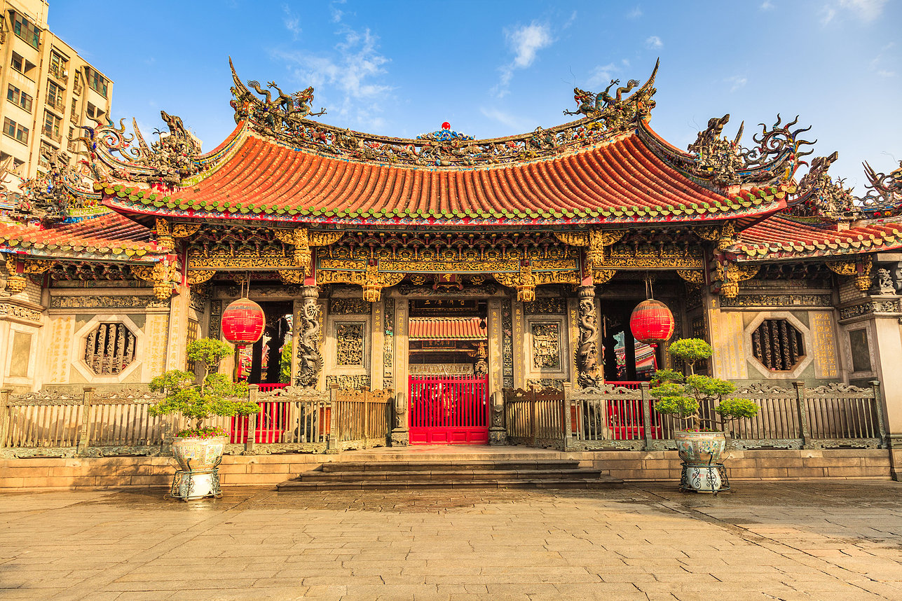
용산사
- 타이페이의 대표적인 사원
- 색다른 경험과 간단한 셀프 점을 칠 수 있는곳
용산사 가는법
- 행천궁역(yellow) -> 종샤오신성(blue) -> 용산사역
맛집정보
- 대만에만 있는 소금커피